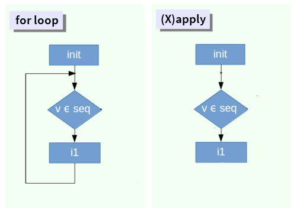

Bucles (loops)
Programación y métodos estadísticos avanzados en
R
Marcelo
Araya-Salas, PhD
“2022-09-27”
Objetivo del manual
- Aprender a procesar de forma serial operaciones que deben repetirse sobre diferentes objetos
Bucles (loops)
- Proceso automatizado de varios pasos organizado como secuencias de acciones (p. Ej., procesos ‘por lotes’)
- Se usa para acelerar los procedimientos en los que se aplica la misma acción a muchos objetos (similares)
- Crítico para la gestión de grandes bases de datos (‘big data’, y buenas prácticas de programación)
2 tipos básicos:
- Ejecutar hasta que se cumpla una condición predefinida (bucles
whileyrepeat)

* Modificado de Tutorial de bucles Datacamp
- Ejecutar para un número predefinido de iteraciones (es decir,
tiempos). 2 tipos:
- Los resultados pueden ingresarse nuevamente en la siguiente
iteración (bucles
for) - Los resultados de una interacción no pueden afectar a otras
iteraciones (
(X) aplica)
- Los resultados pueden ingresarse nuevamente en la siguiente
iteración (bucles

Nota: cuando el resultado de una iteración es completamente independiente de otras iteraciones, la tarea podría ejecutarse en paralelo. Hablaremos sobre computación paralela durante la clase de “codigo eficiente”
Bucles ‘While’
Los bucles while aplican una acción (1 o más funciones)
en una secuencia de elementos hasta que se cumpla una condición. La
condición puede evaluar un resultado del propio ciclo o una entrada
externa:

El siguiente ciclo while se ejecuta hasta que la
correlación de las variables continuas generadas al azar es mayor que un
umbral:
# definir valor inicial
corr_coef <- 0
# iniciar bucle
while (corr_coef < 0.5) {
# generar la variable 1
v1 <- rnorm(n = 20, mean = 100, sd = 20)
# generar la variable 2
v2 <- rnorm(n = 20, mean = 100, sd = 20)
# corrrer la correlacion
corr_coef <- cor(v1, v2)
# imprimir
print(corr_coef)
}
corr_coef## [1] 0.0872575 0.3865472 0.1199017 -0.2902941 0.2413406 -0.1667497
## [7] 0.1272541 0.0011283 -0.1344395 -0.0184824 0.5966901
Para guardar cada uno de los resultados hay 2 opciones:
- Usando la función
append - Agregar nuevos elementos a un vector usando indexación
Usando append:
# definir valor inicial
corr_coef <- 0
# crear vector vacio
cc_vector <- NULL
while (corr_coef < 0.5) {
# generar la variable 1
v1 <- rnorm(n = 20, mean = 100, sd = 20)
# generar la variable 2
v2 <- rnorm(n = 20, mean = 100, sd = 20)
# correr la correlacion
corr_coef <- cor(v1, v2)
# guardar resultado usando append
cc_vector <- append(cc_vector, corr_coef)
}
head(cc_vector)## [1] -0.047693 0.232015 0.133767 -0.089900 0.364152 0.203306
Podemos graficar el resultado como el gráfico anterior así:
library(ggplot2)
cc <- data.frame(y = cc_vector, x = 1:length(cc_vector))
ggplot(data = cc, aes(x, y)) + geom_hline(yintercept = 0.5, col = cols[4],
lwd = 3) + geom_line(col = cols[8], lwd = 4) + labs(x = "Iteraciones",
y = "Correlación de pearson (r)") + theme_classic(base_size = 25)
Usando indexación:
# definir valor inicial
corr_coef <- 0
# crear vector vacio
cc_vector <- NULL
while (corr_coef < 0.5) {
# generar la variable 1
v1 <- rnorm(n = 20, mean = 100, sd = 20)
# generar la variable 2
v2 <- rnorm(n = 20, mean = 100, sd = 20)
# correr correlacion
corr_coef <- cor(v1, v2)
# guardar vector
cc_vector[length(cc_vector) + 1] <- corr_coef
}
head(cc_vector)## [1] 0.239060 0.212589 0.392069 0.132913 -0.093418 -0.320691
Pero tenga en cuenta que append puede ser muy lento (no
recomendado)
Con un pequeño ajuste, un bucle while también puede
evaluar varias condiciones a la vez. Por ejemplo, también podemos
incluir altos valores de correlación negativa:
# definir valor inicial
corr_coef <- 0
# crear vector vacio
cc_vector <- NULL
while (corr_coef < 0.5 & corr_coef > -0.5) {
# generar la variable 1
v1 <- rnorm(n = 20, mean = 100, sd = 20)
# generar la variable 2
v2 <- rnorm(n = 20, mean = 100, sd = 20)
# correr correlacion
corr_coef <- cor(v1, v2)
# guardar resultados
cc_vector[length(cc_vector) + 1] <- corr_coef
}
head(cc_vector)## [1] 0.323266 -0.153637 -0.049445 0.154694 0.191022 -0.168300
Ejercicio 1
1.1 Haga un bucle while que se detenga solo si la
correlación es mayor que 0.5 pero menor que 0.55
1.2 Haga un bucle while que se detenga si la correlación
es superior a 0.8 o si el bucle ha estado ejecutándose durante más de 10
segundos (consejo: use la funcióndifftime y / o
as.numeric)
Bucles ‘repeat’
Los bucles repeat también deben cumplir una condición
para detenerse. Muy parecido a los bucles while. Sin
embargo, se realiza para que la acción se ejecute al menos una vez,
independientemente de la evaluación de la condición

El siguiente bucle repeat hace lo mismo que el
buclewhile anterior:
# crear vector vacio
cc_vector <- NULL
repeat {
# generar la variable 1
v1 <- rnorm(n = 20, mean = 100, sd = 20)
# generar la variable 2
v2 <- rnorm(n = 20, mean = 100, sd = 20)
# correr la correlacion
corr_coef <- cor(v1, v2)
# guardar resultados
cc_vector[length(cc_vector) + 1] <- corr_coef
# parar si se cumple la condicion
if (corr_coef > 0.5)
break
}
head(cc_vector)## [1] 0.2327630 0.2225129 0.3036371 -0.0098055 0.0495164 -0.1844224
Tenga en cuenta que en este caso la condición determina si el ciclo
debe detenerse. En el ciclo while la condición determina si
el ciclo debe continuar.
Ejercicio 2
2.1 Convierta en un bucle repeat el bucle
while del ejercicio 1.2
Bucles ‘for’
Por mucho, for es el bucle más popular. El número de
iteraciones se puede determinar de antemano:

Nuevamente, creamos un bucle que calcula las correlaciones entre
variables aleatorias, en este caso usando un bucle for:
# crear un vector vacio
cc_vector <- NULL
# determinar numero de Iteraciones
reps <- 30
# iniciar bucle
for (i in 1:reps) {
# generar la variable 1
v1 <- rnorm(n = 20, mean = 100, sd = 20)
# generar la variable 2
v2 <- rnorm(n = 20, mean = 100, sd = 20)
# correr la correlacion
corr_coef <- cor(v1, v2)
# guardar resultados
cc_vector[length(cc_vector) + 1] <- corr_coef
}Una característica importante de los bucles
while,repeat y for es que pueden
tomar resultados de iteraciones anteriores como entrada en iteraciones
posteriores. Esto se debe a que los objetos creados dentro de la función
se guardan en el entorno actual (a diferencia de los bucles
Xapply).
La utilidad de los bucles for para el manejo de datos se
entiende mejor cuando se aplica a conjuntos de datos. En este ejemplo
examinamos algunos juegos de datos de ejemplo en R. El
siguiente código crea una lista con 4 juegos de datos de ejemplo:
# lista con bases de datos
lista_datos <- list(BOD = BOD, CO2 = CO2, ChickWeight = ChickWeight,
DNase = DNase)
La utilidad del bucle for es mas obvia y su lógica mas
fácil de entender si lo comparamos con cálculos equivalentes fuera de un
bucle. Por ejemplo, si quisiéramos un vector con el número de columnas
en cada uno de los elementos de lista_datos. Para hacer
esto sin un bucle necesitamos hacer el cálculo independientemente para
cada elemento:
# primer elemento
elm_1 <- lista_datos[[1]]
columnas_1 <- ncol(elm_1)
# segundo elemento
elm_2 <- lista_datos[[2]]
columnas_2 <- ncol(elm_2)
# tercer elemento
elm_3 <- lista_datos[[3]]
columnas_3 <- ncol(elm_3)
# cuarto elemento
elm_4 <- lista_datos[[4]]
columnas_4 <- ncol(elm_4)
# poner valores en vector
columnas <- c(columnas_1, columnas_2, columnas_3, columnas_4)
# ver resultado
columnas## [1] 2 5 4 3Esta repetición de tareas se puede simplificar con un bucle
for de la siguiente forma:
# crear vector vació para guardar resultados
columnas <- NULL
# correr bucle
for (i in 1:length(lista_datos)) {
# sacar datos
elm_i <- lista_datos[[i]]
# calcular numero de columnas
columnas_i <- ncol(elm_i)
# guardar valores
columnas <- append(columnas, columnas_i)
}Note que los valores del vector 1:length(lista_datos) en
el llamado de for son tomados, uno a la vez, para hacer los
cálculos en el cuerpo del bucle.
Ejercicio 3
3.1 Haga un bucle for que devuelva el número de filas
para cada juego de datos de ejemplo
3.2 Haga un bucle for que devuelva el número de filas y
columnas para cada juego de datos de ejemplo
3.3 El juego de datos de ejemplo “ChickWeight” describe el “peso versus la edad de los pollitos en diferentes dietas”:
# convertir a un data.frame
ChickWeight <- data.frame(ChickWeight, stringsAsFactors = FALSE)
# ver las primeras filas
head(ChickWeight)| weight | Time | Chick | Diet |
|---|---|---|---|
| 42 | 0 | 1 | 1 |
| 51 | 2 | 1 | 1 |
| 59 | 4 | 1 | 1 |
| 64 | 6 | 1 | 1 |
| 76 | 8 | 1 | 1 |
| 93 | 10 | 1 | 1 |
## 'data.frame': 578 obs. of 4 variables:
## $ weight: num 42 51 59 64 76 93 106 125 149 171 ...
## $ Time : num 0 2 4 6 8 10 12 14 16 18 ...
## $ Chick : Ord.factor w/ 50 levels "18"<"16"<"15"<..: 15 15 15 15 15 15 15 15 15 15 ...
## $ Diet : Factor w/ 4 levels "1","2","3","4": 1 1 1 1 1 1 1 1 1 1 ...Usando los datos de ChickWeight, calcule la correlación entre el peso
y la edad de cada pollito (consejo: (1) use
unique (ChickWeight $ Chick) dentro del inicio del bucle
for y (2) cree subconjuntos usando indexación dentro del
cuerpo del bucle)
Bucles (X)apply
(X) apply son funciones de nivel superior que toman una
función como entrada y la aplican a una secuencia de objetos (vectores
sensu lato). Bucles creados con (X)apply. Hay
varias funciones (X)apply en R:
## [1] "apply" "dendrapply" "eapply" "kernapply" "lapply"
## [6] "mapply" "rapply" "sapply" "tapply" "vapply"
Sin embargo, los más utilizados son
apply,sapply, lapply
ytapply. Todos siguen la misma lógica:

lapply toma un vector (atómico o de lista), aplica una
función a cada elemento y devuelve una lista:
## $BOD
## [1] 6
##
## $CO2
## [1] 84
##
## $ChickWeight
## [1] 578
##
## $DNase
## [1] 176
sapply también toma un vector (atómico o de lista) y
aplica la función a cada elemento, sin embargo, el resultado es un
vector atómico (si puede empaquetarse como un vector):
## BOD CO2 ChickWeight DNase
## 6 84 578 176
apply aplica una función a cada una de las filas o
columnas de un objeto bidimensional:
| Sepal.Length | Sepal.Width | Petal.Length | Petal.Width | Species |
|---|---|---|---|---|
| 5.1 | 3.5 | 1.4 | 0.2 | setosa |
| 4.9 | 3.0 | 1.4 | 0.2 | setosa |
| 4.7 | 3.2 | 1.3 | 0.2 | setosa |
| 4.6 | 3.1 | 1.5 | 0.2 | setosa |
## 1 2 3 4 5 6 7 8 9 10
## 10.2 9.5 9.4 9.4 10.2 11.4 9.7 10.1 8.9 9.6## 1 2 3 4 5 6 7 8 9 10
## 2.550 2.375 2.350 2.350 2.550 2.850 2.425 2.525 2.225 2.400## Sepal.Length Sepal.Width Petal.Length Petal.Width Species
## "character" "character" "character" "character" "character"
tapply es más específico ya que aplica una función a un
subconjunto de datos definido por un vector categórico adicional. Por
ejemplo, podemos calcular la longitud promedio de pétalo para cada
especie en el juego de datos ‘iris’ de la siguiente manera:
## setosa versicolor virginica
## 1.462 4.260 5.552
Los bucles (X) apply pueden modificarse para realizar
“acciones” personalizadas creando nuevas funciones (ya sea dentro o
fuera del bucle):
# funcion desde fuera del bucle
dims <- function(x) c(nrow(x), ncol(x))
# correr buble
df_dims <- lapply(X = lista_datos, FUN = dims)
# ver resultados
head(df_dims, 3)## $BOD
## [1] 6 2
##
## $CO2
## [1] 84 5
##
## $ChickWeight
## [1] 578 4# # funcion dentro del bucle
df_dims <- lapply(X = lista_datos, FUN = function(x) c(nrow(x), ncol(x)))
# ver resultados
head(df_dims, 3)## $BOD
## [1] 6 2
##
## $CO2
## [1] 84 5
##
## $ChickWeight
## [1] 578 4
Tenga en cuenta que:
en este tipo de bucles no hay retroalimentación de las iteraciones anteriores (es decir, los resultados de una iteración no se pueden ingresar en las iteraciones posteriores)
(X)applyes más limpio que otros bucles porque los objetos creados dentro de ellos no están disponibles en el entorno de trabajo actual.
Ejercicio 4
4.1 Haga un bucle lapply equivalente al bucle
for en el ejercicio 3.4 (utilizando los datos
‘ChickWeight’ calcule la correlación entre peso y tiempo para cada
Chick)
4.2 Haga un bucle sapply para calcular el mayor peso
registrado para cada tipo de dieta (pista:
unique(ChickWeight$Diet), deberia devolver un valor por
tipo de dieta). Nombre el vector resultante para que contenga el
identificador de cada dieta.
4.3 Haga un bucle apply para calcular la media de cada
variable numérica en el juego de datos ‘iris’.
Ejercicios extra
E.1 Reúna los resultados del ejercicio 3.4 en un nuevo juego de datos
con columnas para ‘chick’ y ‘correlation’ usando un bucle
for (consejo: use rbind)
E.2 ¿Cuántos de los juego de datos de ejemplo en
lista_datos contienen una columna que es un factor?
E.3 Calcule el coeficiente de variación de cada variable numérica por especie en el juego de datos ‘iris’ usando ‘tapply’.
Referencias
Session information
## R version 4.2.0 (2022-04-22)
## Platform: x86_64-pc-linux-gnu (64-bit)
## Running under: Ubuntu 22.04.1 LTS
##
## Matrix products: default
## BLAS: /usr/lib/x86_64-linux-gnu/blas/libblas.so.3.10.0
## LAPACK: /usr/lib/x86_64-linux-gnu/lapack/liblapack.so.3.10.0
##
## locale:
## [1] LC_CTYPE=en_US.UTF-8 LC_NUMERIC=C
## [3] LC_TIME=es_CR.UTF-8 LC_COLLATE=en_US.UTF-8
## [5] LC_MONETARY=es_CR.UTF-8 LC_MESSAGES=en_US.UTF-8
## [7] LC_PAPER=es_CR.UTF-8 LC_NAME=C
## [9] LC_ADDRESS=C LC_TELEPHONE=C
## [11] LC_MEASUREMENT=es_CR.UTF-8 LC_IDENTIFICATION=C
##
## attached base packages:
## [1] stats graphics grDevices utils datasets methods base
##
## other attached packages:
## [1] xaringanExtra_0.7.0 ggplot2_3.3.6 RColorBrewer_1.1-3
## [4] kableExtra_1.3.4 knitr_1.40
##
## loaded via a namespace (and not attached):
## [1] tidyselect_1.1.2 xfun_0.33 bslib_0.3.1 purrr_0.3.4
## [5] colorspace_2.0-3 vctrs_0.4.1 generics_0.1.2 htmltools_0.5.3
## [9] viridisLite_0.4.0 yaml_2.3.5 utf8_1.2.2 rlang_1.0.4
## [13] jquerylib_0.1.4 pillar_1.8.0 glue_1.6.2 withr_2.5.0
## [17] DBI_1.1.2 uuid_1.1-0 lifecycle_1.0.1 stringr_1.4.0
## [21] munsell_0.5.0 gtable_0.3.0 rvest_1.0.2 evaluate_0.16
## [25] labeling_0.4.2 fastmap_1.1.0 fansi_1.0.3 highr_0.9
## [29] scales_1.2.0 formatR_1.12 webshot_0.5.3 jsonlite_1.8.0
## [33] farver_2.1.1 systemfonts_1.0.4 digest_0.6.29 stringi_1.7.8
## [37] dplyr_1.0.9 grid_4.2.0 cli_3.3.0 tools_4.2.0
## [41] magrittr_2.0.3 sass_0.4.1 tibble_3.1.8 pkgconfig_2.0.3
## [45] xml2_1.3.3 assertthat_0.2.1 rmarkdown_2.16 svglite_2.1.0
## [49] httr_1.4.4 rstudioapi_0.13 R6_2.5.1 compiler_4.2.0